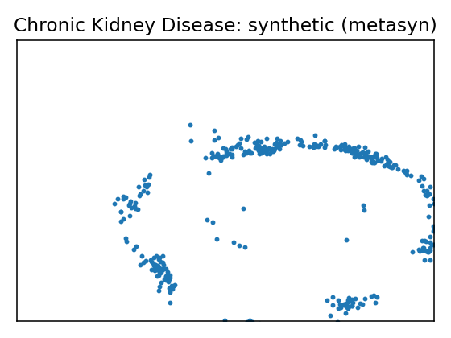
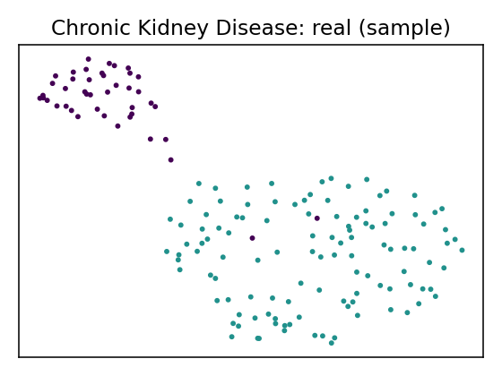

Data Report — Chronic Kidney Disease
Source: UCI dataset 336
SemMap JSON-LD: dataset.semmap.json · RDFa HTML
Overview
| Metric | Value |
|---|---|
| Dataset | Chronic Kidney Disease |
| Source | UCI dataset 336 |
| Rows | 158 |
| Columns | 25 |
| Discrete | 13 |
| Continuous | 12 |
| SemMap | SemMap JSON-LD SemMap HTML |
| Missingness | Not modeled |
Variables and summary
| variable | inferred | dist |
|---|---|---|
| age | continuous | 49.5633 ± 15.5122 [6, 39.25, 50.5, 60, 83] |
| bp | continuous | 74.0506 ± 11.1754 [50, 60, 80, 80, 110] |
| sg | continuous | 1.0199 ± 0.0055 [1.005, 1.02, 1.02, 1.025, 1.025] |
| al | discrete | Albumin negative [0]: 116 (73.42%) Albumin 2+ [3]: 15 (9.49%) Albumin 3+ [4]: 15 (9.49%) Albumin 1+ [2]: 9 (5.70%) Trace albumin [1]: 3 (1.90%) Albumin 4+ [5]: 0 (0.00%) |
| su | discrete | Sugar negative [0]: 140 (88.61%) Trace sugar [1]: 6 (3.80%) Sugar 1+ [2]: 6 (3.80%) Sugar 2+ [3]: 3 (1.90%) Sugar 3+ [4]: 2 (1.27%) Sugar 4+ [5]: 1 (0.63%) |
| rbc | discrete | Normal [normal]: 140 (88.61%) |
| pc | discrete | Normal [normal]: 129 (81.65%) |
| pcc | discrete | Not present [notpresent]: 144 (91.14%) |
| ba | discrete | Not present [notpresent]: 146 (92.41%) |
| bgr | continuous | 131.3418 ± 64.9398 [70, 97, 115.5, 131.75, 490] |
| bu | continuous | 52.5759 ± 47.3954 [10, 26, 39.5, 49.75, 309] |
| sc | continuous | 2.1886 ± 3.0776 [0.4, 0.7, 1.1, 1.6, 15.2] |
| sod | continuous | 138.8481 ± 7.4894 [111, 135, 139, 144, 150] |
| pot | continuous | 4.6367 ± 3.4764 [2.5, 3.7, 4.5, 4.9, 47] |
| hemo | continuous | 13.6873 ± 2.8822 [3.1, 12.6, 14.25, 15.775, 17.8] |
| pcv | continuous | 41.9177 ± 9.1052 [9, 37.5, 44, 48, 54] |
| wbcc | continuous | 8475.9494 ± 3126.8802 [3800, 6525, 7800, 9775, 26400] |
| rbcc | continuous | 4.8918 ± 1.0194 [2.1, 4.5, 4.95, 5.6, 8] |
| htn | discrete | Yes [yes]: 34 (21.52%) |
| dm | discrete | No [no]: 130 (82.28%) Yes [yes]: 28 (17.72%) No [no]: 0 (0.00%) |
| cad | discrete | Yes [yes]: 11 (6.96%) |
| appet | discrete | Good appetite [good]: 139 (87.97%) |
| pe | discrete | Yes [yes]: 20 (12.66%) |
| ane | discrete | Yes [yes]: 16 (10.13%) |
| class | discrete | Not chronic kidney disease [notckd]: 115 (72.78%) Chronic kidney disease [ckd]: 43 (27.22%) Chronic kidney disease [ckd]: 0 (0.00%) |
Fidelity summary
| umap | model | backend | disc jsd mean | disc jsd median | cont ks mean | cont w1 mean | downstream sign match |
|---|---|---|---|---|---|---|---|
 |
metasyn | metasyn | 0.0646 | 0.0514 | 0.216 | 56.8532 | 0.5263 |
| clg_mi2 | pybnesian | 0.0744 | 0.0752 | 0.1996 | 62.539 | ||
| semi_mi5 | pybnesian | 0.0744 | 0.0752 | 0.1996 | 62.539 | ||
| ctgan_fast | synthcity | 0.1733 | 0.1798 | 0.7529 | 1042.22 | ||
| tvae_quick | synthcity | 0.1744 | 0.193 | 0.2715 | 86.9495 |
Privacy summary
| model | backend | n real | n synth | exact overlap rate | near duplicate rate eps | nn distance mean | k min | k pct lt5 | k map | rare qi reproduction rate | identifiability score | delta presence |
|---|---|---|---|---|---|---|---|---|---|---|---|---|
| metasyn | metasyn | 158 | 400 | 0 | 0.9937 | 0.0165 | 1 | 1 | 1 | 0 | 2.5714 | |
| clg_mi2 | pybnesian | 158 | 400 | 0 | 0.9873 | 0.0271 | 1 | 1 | 1 | 0 | 3.5 | |
| semi_mi5 | pybnesian | 158 | 400 | 0 | 0.9873 | 0.0271 | 1 | 1 | 1 | 0 | 3.5 | |
| ctgan_fast | synthcity | 158 | 256 | 0 | 0.3987 | 0.3484 | 1 | 1 | 1 | 0 | 28.6 | |
| tvae_quick | synthcity | 158 | 256 | 0 | 0.9873 | 0.0241 | 1 | 1 | 1 | 0 | 11 |
Models
| UMAP | Details | Structure | |||||||||||||||||||||||||||||||||||||||||||||||||||||||||||||||||||||||||||||||||||||||||||||||||||||||||||||||||||||||||||||||||||||||
|---|---|---|---|---|---|---|---|---|---|---|---|---|---|---|---|---|---|---|---|---|---|---|---|---|---|---|---|---|---|---|---|---|---|---|---|---|---|---|---|---|---|---|---|---|---|---|---|---|---|---|---|---|---|---|---|---|---|---|---|---|---|---|---|---|---|---|---|---|---|---|---|---|---|---|---|---|---|---|---|---|---|---|---|---|---|---|---|---|---|---|---|---|---|---|---|---|---|---|---|---|---|---|---|---|---|---|---|---|---|---|---|---|---|---|---|---|---|---|---|---|---|---|---|---|---|---|---|---|---|---|---|---|---|---|---|---|---|
 |
Real data | ||||||||||||||||||||||||||||||||||||||||||||||||||||||||||||||||||||||||||||||||||||||||||||||||||||||||||||||||||||||||||||||||||||||||
Model: metasyn (metasyn)
Per-variable fidelity
Downstream metrics
Privacy metrics
|
| ||||||||||||||||||||||||||||||||||||||||||||||||||||||||||||||||||||||||||||||||||||||||||||||||||||||||||||||||||||||||||||||||||||||||
 |
Model: clg_mi2 (pybnesian)
Per-variable fidelity
Privacy metrics
|
 | |||||||||||||||||||||||||||||||||||||||||||||||||||||||||||||||||||||||||||||||||||||||||||||||||||||||||||||||||||||||||||||||||||||||
 |
Model: semi_mi5 (pybnesian)
Per-variable fidelity
Privacy metrics
|
 | |||||||||||||||||||||||||||||||||||||||||||||||||||||||||||||||||||||||||||||||||||||||||||||||||||||||||||||||||||||||||||||||||||||||
 |
Model: ctgan_fast (synthcity)
Per-variable fidelity
Privacy metrics
|
 | |||||||||||||||||||||||||||||||||||||||||||||||||||||||||||||||||||||||||||||||||||||||||||||||||||||||||||||||||||||||||||||||||||||||
 |
Model: tvae_quick (synthcity)
Per-variable fidelity
Privacy metrics
|
|